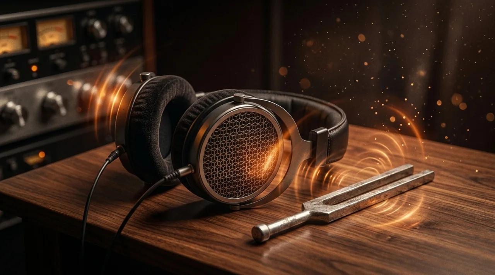

OUÇA · PRATIQUE · EVOLUA
Ditado melódico

Escolha piano, violão, flauta ou violino: timbres sintetizados, sem downloads. Sua escolha fica salva neste navegador.
Ouça uma melodia e digite suas notas em ordem no teclado. Todas as notas têm a mesma duração: este exercício avalia altura e oitava.
O áudio começa quando você aperta um botão. No celular, confira o volume de mídia. Use fones para praticar.
Sua resposta
Deslize o teclado para ver todas as notas. Dó4 é o dó central. Toque uma nota para ouvi-la e adicioná-la.
Resultados e orientação
Conclua uma tentativa para ver sua avaliação.
Seu progresso
Os resultados ficam salvos neste navegador ao concluir uma tentativa.
Ver meu histórico · espanhol →